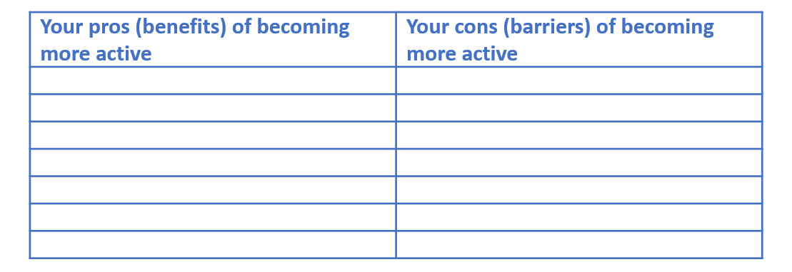
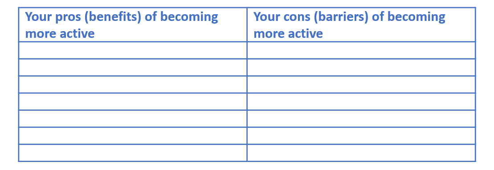
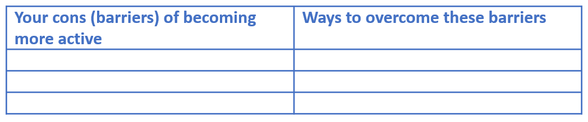

Task 2: RECORD your pros and cons
Use a list like this:

Use a list like this:

Now focusing on the cons (your barriers) to physical activity you listed think about how you can overcome these. What would you suggest to a friend if they were in the same situation?
Use the table below to add your ideas about how you can overcome your barriers. The more cons you can overcome the more likely you are to move through the behaviour change stages and to a point where you are regularly active .
Use a list like this:
